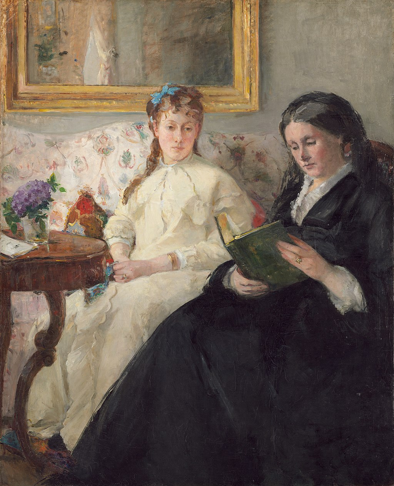

<head>
<meta charset="UTF-8" />
<meta name="keywords" content="drawing, painting" />
<meta name="description" content="drawings by Sunjy" />
<title>Sunjy</title>
<link rel="shortcut icon" type="image/x-icon" href="../../mImages/mCommon/favicon.ico" media="screen" />
<link rel="stylesheet" type="text/css" href="../../mCsses/mCommon/mCssA.css" />
<link rel="stylesheet" type="text/css" href="../../mCsses/mCommon/mCssB.css" />
<link rel="stylesheet" type="text/css" href="../../mCsses/mCommon/mCssC.css" />
<link rel="stylesheet" type="text/css" href="../../mCsses/mCommon/mCssD.css" />
<link rel="stylesheet" type="text/css" href="../../mCsses/mContent/mCssA.css" />
<link rel="stylesheet" type="text/css" href="../../mCsses/mContent/mCssB.css" />
<link rel="stylesheet" type="text/css" href="../../mCsses/mContent/mCssC.css" />
<link rel="stylesheet" type="text/css" href="../../mCsses/mContent/mCssD.css" />
</head>
<script type="text/javascript" src="../../mScripts/mContent/mContentAA.js" /></script>
<script type="text/javascript" src="../../mScripts/mContent/mContentAB.js" /></script>
<script type="text/javascript" src="../../mScripts/mContent/mContentAC.js" /></script>
<script type="text/javascript" src="../../mScripts/mContent/mContentAD.js" /></script>
<script type="text/javascript"></script> 
<script type="text/javascript">
document.write('<div class="mImgAbsolute"></div>');
/*
document.write('<p class="mFontSizeBColor" />From a white paper...</p>');
document.write('<table class="center"><tr><td>');
document.write('');
document.write('</td></tr></table>');
*/
</script>


<script type="text/javascript">
document.write('<p class="mFontSizeBColor" />The Mother and Sister of the Artist</p>');
document.write('<p class="mFontSizeSColor" />“The Mother and Sister of the Artist” by Berthe Morisot depicts a family portrait and an intimate scene, which the artist created when Morisot’s sister stayed with her family in the winter of 1869–1870 to await the birth of her first child.<br><br>The loose white morning robe discreetly disguises the pregnancy.<br><br>“Morisot was anxious about submitting the painting to the Salon, and she sought Manet’s advice. Manet saw the painting on the very last day of submissions when he finally visited the Morisot home and studio.<br><br>Manet contributed by repainting the figure of the mother. Manet’s contributions can be seen in the mother’s features and dress compared to Morisot’s approach with her sister’s features, the floral upholstery, and the reflections in the mirror.<br></p>');
document.write('<table class="center" /><tr><td>');
document.write('<br>The loose white morning robe discreetly disguises the pregnancy.<br><br>“Morisot was anxious about submitting the painting to the Salon, and she sought Manet’s advice. Manet saw the painting on the very last day of submissions when he finally visited the Morisot home and studio.<br><br>Manet contributed by repainting the figure of the mother. Manet’s contributions can be seen in the mother’s features and dress compared to Morisot’s approach with her sister’s features, the floral upholstery, and the reflections in the mirror.<br>" />');
document.write('</td></tr></table>');
</script>


